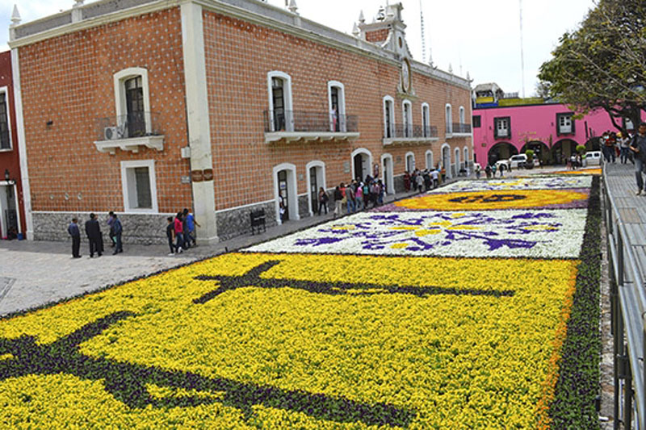

Celebracion de la semana santa
¿En que consiste la semana Santa?

La Semana Santa es la conmemoración anual cristiana de la Pasión, Muerte y Resurrección de Jesús de Nazaret. Por eso, es un período de intensa actividad litúrgica dentro de las diversas confesiones cristianas. Da comienzo el Domingo de Ramos y finaliza el Domingo de Resurrección, aunque su celebración suele iniciarse en varios lugares el viernes anterior (Viernes de Dolores) y se considera parte de la misma el Domingo de Resurrección. La fecha de la celebración es variable (entre marzo y abril según el año) ya que depende del calendario lunar. La Semana Santa va precedida por la Cuaresma, que finaliza en la Semana de Pasión donde se celebra la eucaristía en el Jueves Santo, se conmemora la Crucifixión de Jesús el Viernes Santo y la Resurrección en la Vigilia Pascual durante la noche del Sábado Santo al Domingo de Resurrección. Durante la Semana Santa tienen lugar numerosas muestras de religiosidad popular a lo largo de todo el mundo, destacando las procesiones y las representaciones de la Pasión.
Los dias que conlleban la Celebracion
Domingo de Ramos:
Celebramos la entrada triunfal de Jesús a Jerusalén en la que todo el pueblo lo alaba como rey con cantos y palmas. Por esto, nosotros llevamos nuestras palmas a la Iglesia para que las bendigan ese día y participamos en la misa.
Jueves Santo:
Este día recordamos la Última Cena de Jesús con sus apóstoles en la que les lavó los pies dándonos un ejemplo de servicialidad. En la Última Cena, Jesús se quedó con nosotros en el pan y en el vino, nos dejó su cuerpo y su sangre. Es el jueves santo cuando instituyó la Eucaristía y el Sacerdocio. Al terminar la última cena, Jesús se fue a orar, al Huerto de los Olivos. Ahí pasó toda la noche y después de mucho tiempo de oración, llegaron a aprehenderlo.
Viernes Santo:
Ese día recordamos la Pasión de Nuestro Señor: Su prisión, los interrogatorios de Herodes y Pilato; la flagelación, la coronación de espinas y la crucifixión. Lo conmemoramos con un Via Crucis solemne y con la ceremonia de la Adoración de la Cruz.
Sábado Santo o Sábado de Gloria:
Se recuerda el día que pasó entre la muerte y la Resurrección de Jesús. Es un día de luto y tristeza pues no tenemos a Jesús entre nosotros. Las imágenes se cubren y los sagrarios están abiertos. Por la noche se lleva a cabo una vigilia pascual para celebrar la Resurrección de Jesús. Vigilia quiere decir “ la tarde y noche anteriores a una fiesta.”. En esta celebración se acostumbra bendecir el agua y encender las velas en señal de la Resurrección de Cristo, la gran fiesta de los católicos.
Domingo de Resurrección o Domingo de Pascua:
Es el día más importante y más alegre para todos nosotros, los católicos, ya que Jesús venció a la muerte y nos dio la vida. Esto quiere decir que Cristo nos da la oportunidad de salvarnos, de entrar al Cielo y vivir siempre felices en compañía de Dios. Pascua es el paso de la muerte a la vida.
Como lo celrebran otras Religiones
Testigos de Jehová:
Los Testigos de Jehová consideran que la Semana Mayor es una fecha común; ellos celebran anualmente la muerte de Jesús, pero lo hacen según el calendario arameo. En la dicha reunión comparten vino y pan, tal como lo hizo el Señor en la última cena.
“Nosotros celebramos la muerte de Jesús con una cena, cada año la fecha puede variar dependiendo del calendario arameo.
“Durante la Semana Santa que llaman los católicos, los testigos de Jehová comemos normalmente, ya que consideramos que esos son días común y corriente. A parte de ellos no creemos en santos ni imágenes”, comentó Rosalba Montaño, testigo de Jehová.

Pentecostales:
La celebración de la Semana Santa para los pentecostales inicia el jueves a las 2:00 de la tarde con un desfile, en el cual reparten volantes, entonan canciones e invitan a toda la comunidad a congregarse en una reunión que tiene lugar en su centro de culto a las 6:00 de la tarde.
Una vez allí en el templo, dan apertura a la fiesta denominada “Levántate, hoy es el día de tu salvación”. En este acto se efectúan bautizos, y llevan a cabo cuatro cultos o reuniones especiales.
“Desde el día jueves nos reunimos a alabar a Dios, para ello contamos con la presencia de grupos musicales, duetos, mariachis y vallenatos, entre otros, porque, en realidad, vivimos una fiesta.
“El viernes tenemos la gran confraternidad, en donde a las 6:00 de la mañana y a las 2:00 y 5:30 de la tarde adoramos a Jesús, para reconocerle su grandeza y su poder. Aparte de eso pedimos por la salud de los enfermos y por que se mejore la situación del mundo”, manifestó José Ignacio Sierra, pastor de la iglesia Pentecostal de Colombia.
De acuerdo con la información suministrada por los pentecostales, en sus encuentros el Espíritu Santo se manifiesta. Quienes asisten y tienen un encuentro personal reciben el don del Espíritu, con la evidencia de hablar en otros idiomas.
“Aquí nadie se cae o bota espuma por la boca, el Espíritu Santo es algo que hace que la persona conscientemente comienza a proferir palabras en otro idioma, pero esa es la manifestación del gozo de Dios”, mencionó.
De otra parte, quienes integran esta religión sostienen que existen alimentos prohibidos por las escrituras, tanto para la Semana Santa como para el resto del año, y son tanto aquellos que tienen sangre como la carne de los animales que han sido ahogados.
Aplicacion Dos
Carranza Martinez Sergio Ari
Semana Santa En Mi Comunidad
Durante la temporada vacacional de Semana Santa que se lleva a cabo en el municipio de Atlixco, las tradiciones de fe que distinguen a la entidad que favorece a los diversos atractivos que la región ofrece. Lo anterior representa una gra festividad que nos une a todos.
Entre las tradiciones que han distinguido a Atlixco es la ‘Procesión del Silencio’ en la comunidad de Nexatengo, la cual es realizada por la cofradía de Nazarenos de la entidad y la ‘Procesión de Engrillados’. Cabe mencionar que ambos eventos son actos de penitencia, fe y de arrepentimiento.
Cabe precisar que en la “Procesión de los Engrillados” los participantes se caracterizan por vestir de luto y portar pesadas cadenas de aproximadamente 60 kilos, además de ponerse espinas en el cuerpo. Ellos recorren las principales calle de la ciudad y tienen una preparación, tanto espiritual como física de dos meses.

Todos los poblanos y personas de otros estados vecinos a admirar el tapete monumental de “Flores de Primavera”, el cual fue hecho con más de 160 mil plantas y con imágenes alusivas a esta temporada de Semana Santa, y otro con diseños representativos de Atlixco.
Sin duda Atlixco ofrece esta temporada una gran variedad de opciones para toda la familia.
Carranza Martinez Sergio Ari
Semana Santa en Tlaxacala
La celebracion de semana Santa en Tlaxcala
En Tlaxcala en cambio, aún sin tener playas, cuenta con una sobresaliente diversidad de atractivos, capaces de satisfacer al más exigente de los viajeros, en el marco de la Semana Santa. A continuación mencionaremos algunos de los más relevantes. Acerca de Tlaxcala Semana Santa en Tlaxcala
Semana Santa en Tlaxcala viacrucis-santa-ana Tanto se aguarda la llegada de la Semana Santa, en especial cuando los meses previos han sido de arduo trabajo o mucha tensión, que cuando finalmente acontece, el hecho de no elegir un buen destino turístico, hace que tales vacaciones pasen sin más y no se disfrute ni se descanse como se hubiera deseado.
Durante la temporada vacacional de Semana Santa que se lleva a cabo en el municipio de Atlixco, las tradiciones de fe que distinguen a la entidad que favorece a los diversos atractivos que la región ofrece. Lo anterior representa una gra festividad que nos une a todos.
De tal modo que la ciudad de Tlaxcala se nos muestra como un caleidoscopio colosal, en donde las tradiciones más pintorescas, los tesoros arqueológicos y arquitectónicos y la más deliciosa gastronomía de la región, se pueden conocer. Los turistas, por lo general, resultan fascinados de sus vacaciones de Semana Santa en Tlaxcala. Aparte de las celebraciones propias de estas fechas, los visitantes de estos lares, hallan insospechadas oportunidades de diversión, que los hace volver al lugar en repetidas ocasiones. Así pues, pasar las vacaciones de Semana Santa en Tlaxcala, es una de las mejores decisiones que los viajeros y turistas pueden tomar.
Carrranza Martinez Sergio Ari
Semana santa en Iztapalapa
La celebracion de semana Santa en Iztapalapa
En Iztapalapa tiene lugar una ceremonia, fiesta y representación de la Pasión, que no responde ni a una narración sacra, ni a un teatro tradicional: es una expresión de múltiples aportaciones que se funde en una particular sincretización.
Los misioneros utilizaron el teatro para catequizar a los antiguos mexicanos y desterrar así las prácticas religiosas anteriores. Las escenificaciones de la Pasión, conmovían profundamente a los espectadores; así, el teatro de los evangelizadores actuó en favor de la cristianización. Del pasado llegan las voces que amalgaman en el presente una forma particular de sincretismo, dondelas viejas costumbres, los componentes internos y externos del drama, se llenan de nuevos contenidos sin desalojar completamente a las anteriores.

Los protagonistas
Los papeles ya no se heredan familiarmente como se hacía en otras épocas. Soldados romanos y judíos, integrantes del Sanedrín, vírgenes del pueblo, mujeres de Herodes, romanas, se eligen de entre los habitantes de los diferentes barrios. Los nazarenos son aquellos que por promesa, manda o voluntad propia, se imponen la carga de una cruz a lo largo de todo el trayecto del Vía Crucis, atrás del Cristo. Los actores rivalizan por los papeles principales. Los criterios para seleccionar a los personajes son diversos, y los más estrictos son para designar a los actores principales: los apóstoles y la Virgen María. Cristo, por ejemplo, debe ser fuerte para soportar el recorrido cargando la cruz, soltero, originario de Iztapalapa, de familia cristiana, y poseer un físico que concuerde con la idea que la población tiene de Jesús. Él y otros personajes se dejan crecer el pelo, se lo tiñen.
Carranza Martinez Sergio Ari
Semana Santa en Oaxaca
La celebracion de Semana Santa en Oaxaca

Dentro de la gama de festejos religiosos para los Oaxaqueños la cuaresma y la Semana Santa reviste gran significado.
El Primer Viernes de Cuaresma la Festividad del Señor de Las Misericordias en el Templo de San Juan de Dios, el Segundo Viernes de Cuaresma la Festividad del Señor de Las Maravillas en el Templo de La Defensa , el Cuarto Viernes de Cuaresma la Festividad de la Samaritana en la Ciudad de Oaxaca, el Quinto Viernes de Cuaresma la festividad del Señor de las Peñas en el Templo del Carmen Alto y la Festividad del Señor San Lázaro en la Villa de San Antonino Castillo Velasco.
El Sexto Viernes de Cuaresma, es el viernes de Dolores, una tradición de gran devoción en donde se rinde culto a la madre de Dios, colocando el Altar de la Virgen de Dolores, llegando así a la Semana Santa, la cual inicia para los Oaxaqueños con el Domingo de ramos, rememorando la entrada de Jesús en Jerusalen y la Festividad del Señor del Burrito en la Población de San Antonino Castillo Velasco.

En el Estado de Oaxaca la Semana Santa muestra tintes diversos: desde el respeto y solemnidad con que los oaxaqueños acuden a los templos a tomar ceniza y el recogimiento con el que los católicos manifiestan su luto durante esta semana, hasta la alegría de los “Viernes del Llano” que los jóvenes, celebran en la ciudad capital, llenos de entusiasmo; o la colorida generosidad del “Día de la Samaritana”, con el obsequio de aguas frescas en templos, escuelas, oficinas, negocios, etc.
Aunado a este espíritu de festividad, es la hospitalidad oaxaqueña y la impresionante belleza del litoral, lo que convierte a la Costa de Oaxaca en una de las mejores opciones de viaje durante la Semana Santa: sol, vegetación exuberante, hermosas playas de tonos celestes, cálidas y transparentes.
En la región del Istmo de Tehuantepec, Oaxaca cuenta con una gran cantidad de tradiciones religiosas durante la época de la Semana Mayor que se llevan a cabo en los barrios de Santo Domingo Tehuantepec, Juchitán, Salina Cruz, Ixtaltepec, Ixtepec, San Blas Atempa, etc.
Asimismo, tanto en la Ventosa como en Las Escolleras , en el Puerto de Salina Cruz, se llevan a cabo diversas actividades deportivas, aunado a la belleza y tranquilidad de sus aguas y la deliciosa gastronomía istmeña.
¡En esta Semana Santa te espera la tranquilidad, hospitalidad y tradición que solo Oaxaca te puede ofrecer!
Carranza Martinez Sergio Ari